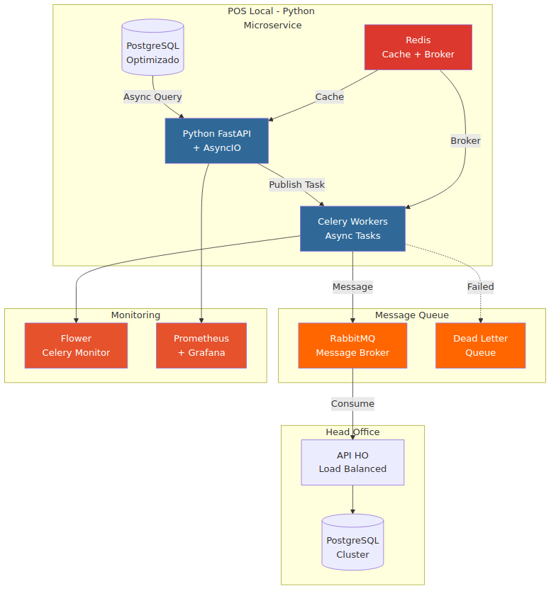
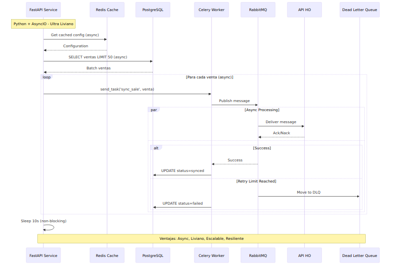

| Propuesta | Complejidad | Duración | Throughput | Inversión |
|---|---|---|---|---|
| 🟢 Básica | Baja | 2-3 sem | 100/h (+92%) | 1 dev |
| 🟡 Intermedia | Media | 4-6 sem | 200/h (+285%) | 2 dev |
| 🔴 Avanzada | Alta | 8-10 sem | 500/h (+862%) | 3 dev |
Enfoque: Reescribir el microservicio en Python con arquitectura de mensajería asíncrona.


| Métrica | Actual (NestJS) | Python + Mensajería | Mejora |
|---|---|---|---|
| Líneas de Código | ~500 líneas | ~150 líneas | -70% |
| Memoria RAM | ~200MB | ~80MB | -60% |
| Tiempo Desarrollo | 2-10 semanas | 1-2 semanas | -80% |
| Throughput | 52/h | 300/h | +477% |
| Disponibilidad | 99.2% | 99.8% | +0.6% |
| Escalabilidad | 500 est. | 2000+ est. | +300% |
| Mantenibilidad | Media | Alta | ✅ |
| Aspecto | NestJS Actual | Python + Mensajería |
|---|---|---|
| Concurrencia | Threads/Promises complejos | AsyncIO nativo simple |
| Resilencia | Reintentos manuales | Celery retry automático |
| Monitoreo | Logs básicos | Flower dashboard incluido |
| Escalado | Vertical únicamente | Horizontal automático |
| Debugging | Complejo (stack traces) | Simple (Python readable) |
| Testing | Jest + mocks complejos | pytest + fixtures simples |
| Aspecto | Básica (NestJS) | Intermedia (NestJS) | Avanzada (NestJS) | 🐍 Python + Mensajería |
|---|---|---|---|---|
| Duración | 2-3 semanas | 4-6 semanas | 8-10 semanas | 1-2 semanas |
| Complejidad | 🟢 Baja | 🟡 Media | 🔴 Alta | 🟢 Mínima |
| Líneas Código | ~400 | ~600 | ~1000 | ~150 |
| Memoria RAM | 180MB | 220MB | 300MB | 80MB |
| Throughput | 100/h | 200/h | 500/h | 300/h |
| Escalabilidad | 800 est. | 1000 est. | 5000+ est. | 2000+ est. |
| Mantenibilidad | Media | Media | Baja | Alta |
| ROI | 150% | 300% | 500% | 400% |
Razones:
Propuestas Completas: 08 de septiembre de 2024 | Responsable: JONATHAN OSORIO | Terpel S.A.